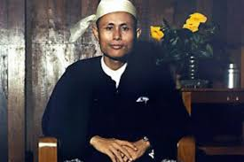

|  | English Name | Aung San |
|---|---|---|
| Burma Name | အောင်ဆန်း | |
| Born | 13 February 1915 Natmauk,Magwe,Myanmar | |
| Died | 19 July 1947 (aged32) Yangon,Myanmar | |
| Nationality | Burmese | |
| Political Party | Anti-Fascist People's Freedom League Communist Party of Burma Burma Socialist Party Thakin Society |
|
| Spouse(s) | Khin Kyi(m,1942) | |
| Children | Aung San Oo Aung San Lin Aung San Su Kyi Aung San Chit |
Aung San was born in the small town of Natmauk, Magway District, on 13 February 1915. The family was considered middle-class. He was the youngest of nine siblings; he had three older sisters and five older brothers. Aung San's name was given to him by one of his older brothers, Aung Than. Aung San received his primary education at a Buddhist monastic school in Natmauk, but he moved to Yenangyaung in grade 4 because his eldest brother, Ba Win, had become the principal of the high school there. Aung San rarely spoke before the age of eight. As a teenager, he often spent hours reading and thinking alone, oblivious to those around him. In his youth he was generally unconcerned with his appearance and clothing. In his earliest articles, published in the "Opinion" section of The World of Books, he opposed the ideology of Western-style individualism supported by U Thant in favour of a social philosophy based on the "standardization of human life". Aung San later became friends with U Thant through their mutual friendship with U Nu.